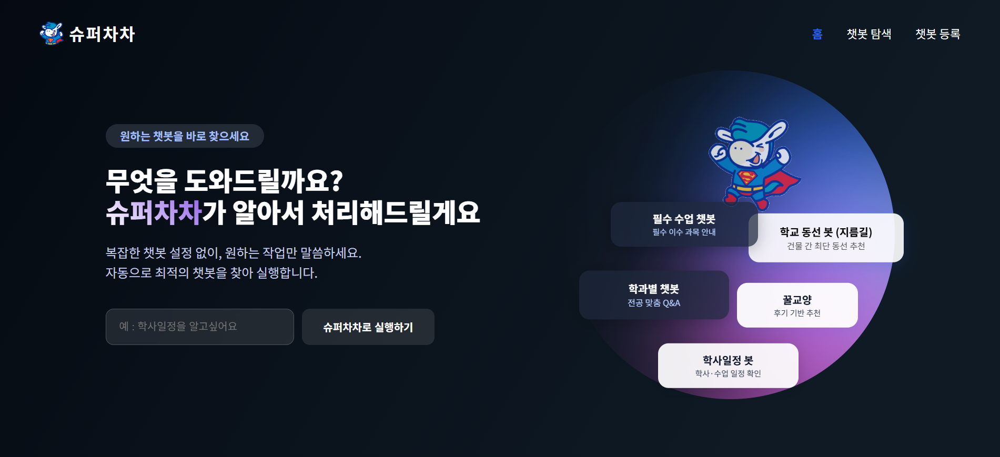

사용자에게 남아 있던 일
학내에는 부서별 챗봇이 이미 여러 개 있었습니다. 문제는 사용자가 질문하기 전에 어느 챗봇에 물어야 하는지부터 정해야 한다는 점이었습니다. 답을 주는 창구는 있는데 그 창구를 찾는 일이 사용자 몫으로 남아 있었습니다.
3인 팀에서 기획과 구조 설계를 맡고 프론트엔드와 자동 연결 기능을 개발했습니다. 사용자가 서비스 분류 체계를 먼저 익히지 않아도 질문을 시작할 수 있게 만드는 것이 목표였습니다.

질문에서 챗봇으로
질문의 의미를 임베딩으로 표현해 알맞은 챗봇을 찾도록 구현했습니다. 사용자는 챗봇 목록을 직접 훑는 대신 질문을 먼저 입력할 수 있습니다.
챗봇을 하나로 합치지 않고 앞단에 연결 계층만 두었습니다. 기존 챗봇은 그대로 두고 입구만 바꾸는 쪽이 각 부서의 운영을 건드리지 않으면서 사용자 부담을 줄이는 방법이라고 봤습니다.
연결 품질과 사용 흐름
연결 기능은 동작 여부만으로 판단하기 어려웠습니다. 표현이 달라도 같은 분야를 찾는지 확인하면서 분류 결과를 살폈고 사용자가 질문을 입력하는 화면과 연결 흐름을 함께 수정했습니다.
학내 질문이라는 범위 안에서 챗봇을 선택하도록 구성했습니다. 질문을 분류하는 정확도와 연결된 챗봇의 답변 품질은 다른 문제이므로 탐색 과정의 개선을 전체 답변 정확도로 표현하지 않았습니다.
변화와 성과
질문에 맞는 챗봇을 자동으로 연결해 탐색 과정을 줄였습니다.
생성형 AI 활용 경진대회에서 은상을 받았습니다.
공개 화면 ↗공개 화면의 질문 실행은 별도 백엔드 운영 상태에 따라 제한될 수 있습니다.
남은 기준
무엇을 쓸지 정하는 일만큼 사용자가 그 결과를 어디서 어떻게 받는지 설계하는 일이 중요했습니다. 창구가 여러 개면 사용자는 질문하기 전에 구조부터 이해해야 합니다.
뒤에 무엇이 몇 개 붙어 있든 사용자에게는 하나의 입구로 보이게 만드는 쪽으로 설계하겠습니다.